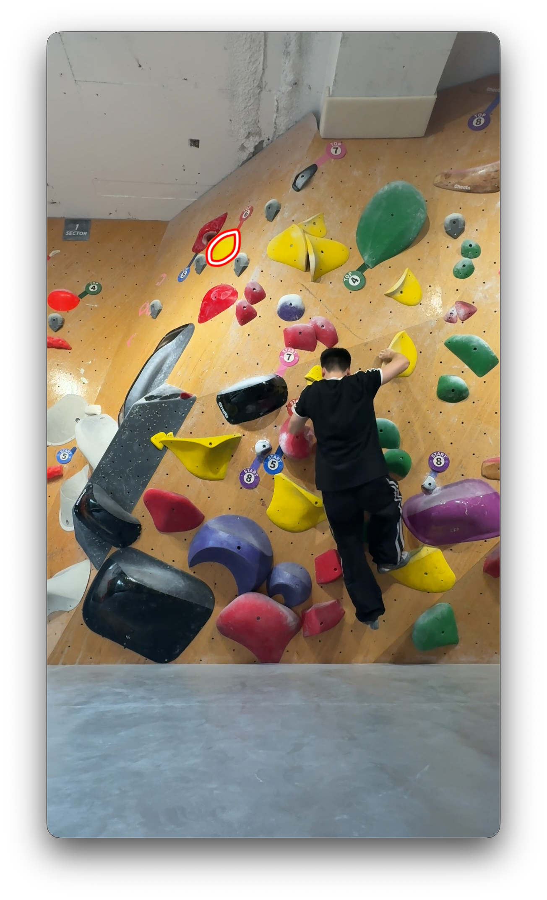
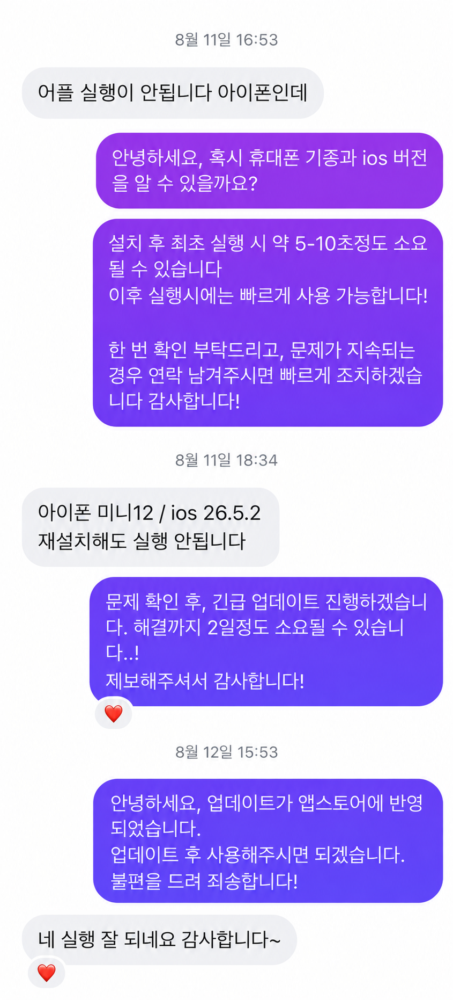

찾는 시간을 줄이고
녹화와 동시에 온디바이스 AI로 등반 구간을 분석합니다. 긴 원본을 처음부터 다시 훑는 대신 후보부터 확인합니다.
A CLIMBER’S SIDE PROJECT, OUT IN THE WORLD
녹화 후 자동으로 감지된 결과 구간을 바로 확인하세요
한 번 길게 촬영하면 등반 구간을 기기 안에서 찾아줍니다. 확인하고, 다듬고, 원하는 장면만 앨범에 남기는 클라이밍 카메라.
인스타그램에서 좋은 반응을 얻었던 홍보 릴스소리와 함께 재생해 보세요 ↗
DaVinci Resolve로 직접 제작한 모션그래픽촬영부터 구간 저장까지, 제품의 흐름을 담았습니다.
한국의 실내 볼더링에는
자신의 등반을 촬영하고 공유하는 문화가 있습니다.
휴대폰을 삼각대에 올리고 같은 문제에 여러 번 도전합니다. 완등하면 그 순간을 잘라 SNS에 올립니다. 하지만 한 문제를 오래 시도할수록 앨범에는 실패와 대기 장면이 쌓이고, 정작 남기고 싶은 순간을 찾는 일은 번거로워집니다.
클라이머로서 직접 겪은 불편함이 TopOut의 출발점이었습니다. 운동이 끝난 뒤 영상까지 정리해야 하는 시간을 줄이고 싶었습니다.
녹화와 동시에 온디바이스 AI로 등반 구간을 분석합니다. 긴 원본을 처음부터 다시 훑는 대신 후보부터 확인합니다.
완등뿐 아니라 다시 보고 싶은 실패 장면도 선택할 수 있습니다. 자동 제안을 직접 수정해 저장할 구간을 결정합니다.
선택한 클립만 사진 앱·갤러리에 저장합니다. 검토가 끝난 불필요한 임시 원본과 내보내기 파일은 정리합니다.
촬영 중에는 전체 원본을 앱의 임시 공간에 기록합니다. 구간 탐지는 편집 후보를 제안하며, 완등 성공 여부를 확정 판정하지 않습니다. 강제 종료로 남은 임시 영상은 다음 실행 시 정리합니다.
THE EVERYDAY FLOW


BUILDING THE RIGHT THING
같은 문제를 푸는 여러 방법 중, 저장하는 순간부터 달라지는 방법을 택했습니다.
구간을 찾는 수고는 줄일 수 있습니다. 하지만 앱을 실행하기 전까지 불필요한 원본이 계속 저장공간을 차지합니다. 촬영과 정리가 분리된 문제는 남았습니다.
직접 녹화하고 동시에 분석하면 앨범으로 내보내기 전 구간을 고를 수 있습니다. 카메라·분석·편집의 구현은 복잡해져도 사용자 흐름은 짧아집니다.
FIRST, MAKE IT WORK ON MY PHONE
MacBook과 iPhone을 사용하고 있어 먼저 iOS에서 제품 흐름을 검증한 뒤 Android로 확장하기로 했습니다. 등반의 시작과 끝을 찾으려면 사람이 매트에서 벽으로 올라갔는지, 탑홀드에 접근했는지 알아야 한다고 생각했습니다.
오픈소스 MobileSAM으로 탭한 홀드의 영역을 분리했습니다. ONNX 변환·추출 실험을 거쳐 iOS에서는 Core ML encoder·decoder로 연결했습니다. 이후 Android에서는 ONNX Runtime을 사용했습니다.
AI 호출을 줄이기 위해 벽과 매트의 색 차이, 매트의 균일도와 직선 경계를 사용했습니다. Pose 없이 영역별 픽셀 변화로 움직임을 찾는 것이 첫 접근이었습니다.
조명·그림자, 벽과 비슷한 매트 색, 큰 볼륨의 외곽선이 예외를 만들었습니다. 규칙이 늘어날수록 환경 변화에 대응하기 어려워졌습니다.
THE GYM CHANGED THE ASSUMPTIONS
처음에는 매트 영역, 매트 위쪽의 벽 영역, 탑홀드 주변의 픽셀 변화를 비교하고, 움직임이 나타나고 사라지는 순서로 등반의 시작과 종료를 판단했습니다.
매트 주변에서 움직임이 발생한 뒤 매트 영역의 움직임이 사라지고, 매트 위쪽의 벽 영역에서 움직임이 감지되면 클라이머가 매트를 떠나 벽에 오른 것으로 보고 등반 시작으로 판단했습니다.
탑홀드 주변에서 움직임이 발생하고, 이후 매트 경계 주변에서 다시 움직임이 감지되면 탑홀드에 도달한 클라이머가 매트로 돌아온 것으로 해석해 완등 구간의 종료로 판단했습니다.
하지만 삼각대가 놓인 바닥도 푹신한 매트였습니다. 누군가 착지할 때 카메라 전체가 흔들렸고, 날리는 초크와 노출 변화도 픽셀 차이로 잡혔습니다.
세 영역이 동시에 흔들리는 순간을 걸러내는 보정도 시도했지만, 화면 변화만으로 실제 등반과 환경 변화를 안정적으로 구별하기에는 한계가 있었습니다.
기존 Motion Detection은 버리지 않고 Pose 탐지를 시작하는 저비용 트리거로 바꿨습니다. iOS에서는 Apple Vision의 관절 좌표를 이용해 매트선과 신체의 관계를 읽기 시작했습니다.
Motion Detection으로 움직임이 감지되면 Pose 탐지를 실행해 사람의 관절 위치를 찾습니다. 발목을 포함한 신뢰 가능한 관절 중 가장 낮은 점이 매트 경계 위로 올라오면 벽에 오른 것으로 보고 등반을 시작합니다. 이후 관절을 추적하다가 최하점이 경계 아래로 내려오면 매트로 돌아온 것으로 보고 등반 종료로 판단합니다.
A SIMPLER FINISH REFERENCE
많은 볼더링 문제에서 탑홀드는 위쪽에 있습니다. 탑홀드 선택을 필수로 요구하는 대신, 신뢰할 수 있는 신체 관절이 화면상 가장 높이 올라간 시점을 종료 후보로 보존했습니다. 매트로 돌아오는 순간에 등반을 닫고, 결과는 그 이전의 최고점 시각을 기준으로 제안합니다.
기존 홀드 분할은 선택 기능인 탑홀드 마스킹으로 남겼습니다. 켜면 탑홀드와 신체 관절이 가장 가까워진 순간을 종료 후보로 사용하고, 저장 영상에 선택 영역을 표시할 수 있습니다.
최고점·최근접 시점은 편집 기준입니다. 실패한 시도도 후보가 될 수 있으며 사용자가 결과를 확인합니다. 마스킹 영상의 SNS 공유가 앱을 알리는 계기가 되리라는 기대도 제품 설계에 반영했습니다.


Pose 분석을 추가하면서 전력·발열 부담도 커졌습니다. 기본 설정에서 실시간 프리뷰를 중단하고 검정 배경에 녹화 아이콘과 시간만 남겨 불필요한 화면 렌더링을 줄였습니다. OLED 화면의 검정 표현도 고려한 결정입니다.
촬영 상태는 명확히 알리면서 주변 클라이머가 호기심을 가질 수 있는 모습도 의도했습니다. 실제로 암장에서 직접 사용했을 때 다른 클라이머들이 녹화 화면에 관심을 보이며 어떤 앱인지 물어본 경험이 있었습니다. 촬영 화면이 자연스럽게 TopOut을 소개하는 계기가 된 것입니다. 앵글 확인이 필요하면 프리뷰를 켤 수 있습니다.
FIELD TEST → POSE RECOVERY
빠른 동작의 모션 블러, 아크로바틱한 시작, 관절 가림과 순간적인 화면 이탈이 Pose를 끊었습니다. 누락 즉시 종료하면 한 번의 시도가 여러 구간으로 나뉩니다. 그래서 ‘유실’을 복구 가능한 상태로 다뤘습니다.
구간 정리: 원본 길이 2초 미만인 구간만 이웃과의 원본 간격 3초 이내에서 병합하고, 이웃이 없으면 제외합니다. 정상 길이의 시도는 각각 유지합니다. 마지막에 iOS 앞뒤 3초, Android 앞 5초·뒤 3초의 편집 여백을 더하고 원본 길이 안으로 제한합니다.
발목 위치를 놓치는 출발에서는 ‘바닥에서 발이 떨어졌는가’만으로 시작을 판단하기 어렵습니다. 보정된 매트 경계가 있으면, 신뢰 가능한 관절이 이미 벽 쪽에 있을 때 시작을 잡는 별도의 공간 기준이 됩니다. 이 기준은 불완전한 Pose 탐지를 보완하고, 클라이머가 벽에 오르거나 매트로 돌아오는 시점을 구분해 등반 구간 분할의 정확도를 높이는 데 크게 기여합니다.
초기 CV 경계 탐지는 다양한 암장 환경에서 개발자 체감 약 60% 수준이었습니다. 정식 평가셋으로 측정한 정확도는 아닙니다. 자동 탐지를 정답으로 강제하지 않고, 사용자가 두 점을 움직여 최종 경계를 완성하도록 했습니다.


ANDROID / SAME EXPERIENCE, DIFFERENT CONSTRAINTS
Apple Vision을 쓸 수 없는 Android에서는 포즈 모델부터 다시 검토했습니다. 클라이밍 자세의 관절 안정성, 블러·가림, 장시간 추론 부담, 앱 크기와 배포 조건을 함께 보며 MoveNet Thunder FP16을 선택했습니다.
| 후보 | 검토한 제약 | 결정 |
|---|---|---|
| ML Kit · MediaPipe | 홀드 오탐과 클라이밍 자세·런타임 적합성 | 교체 |
| EfficientDet Lite2 | 사람 영역을 찾는 2단계 실험, Pose 자체는 별도 필요 | 중간 실험 |
| YOLO11 Pose | 검출 안정성 대비 지속 추론 비용과 배포 라이선스 | 제외 |
| PP-TinyPose | 작은 관절 안정성, 네이티브 의존성과 패키지 크기 | 제외 |
| MoveNet Lightning | 높은 처리량, 다이노·블러에서 포즈 유실 | 교체 |
| MoveNet Thunder FP16 | ROI와 상태별 분석 주기로 연산 부담 보완 / LiteRT | 채택 ↗ |
정량 점수 순위가 아닌 개발 과정에서의 비교·선택 기록입니다.
기기에 따라 0.5×와 1× 전환은 물리 카메라 재연결이 필요했고, 프리뷰가 끊기는 지연이 보였습니다. 두 카메라를 동시에 쓰는 접근도 검토했지만 기기별 지원 제약을 고려해 정지 프레임 전환으로 조작의 연속성을 만들었습니다.
직접 사용했을 때 어색함을 줄이는 데 집중했습니다. 하드웨어 지연을 없애는 대신 손가락의 움직임과 화면 반응이 이어지도록 설계했습니다.
CameraEngine · LensZoomGestureController
Swift · UIKit · AVFoundation
Vision · Core ML · PhotoKit
Kotlin · Compose · CameraX / Camera2
LiteRT · ONNX Runtime · MediaStore
사용자가 알려준 불편함과 직접 쓰며 발견한 문제를 구분하고, 다음 변경으로 연결했습니다.
암장마다 색과 조명이 달라 규칙 기반 경계가 흔들렸습니다. 이미 홀드 선택에 사용하던 MobileSAM을 매트 분할에도 활용했습니다. 모델이 찾은 영역에 구조적 조건을 더해 경계 후보를 고릅니다.
SAM 적용 뒤 일부 iOS 기기에서 앱이 실행되지 않는다는 제보가 있었습니다. 메모리 여유가 작은 기기에서 모델 준비가 카메라 진입을 막지 않도록 로딩 시점을 분리하고, CPU·Neural Engine 사용으로 GPU 메모리 경쟁을 완화했습니다.
그 뒤에도 매트 분석에서 빠져나오지 못하는 문제가 남았습니다. 양 플랫폼 모두 5초 후 y=75% 기본선과 수동 보정으로 복귀하게 바꿨습니다. 늦게 도착한 결과는 무시해 사용자가 수정한 선을 덮지 않습니다. 탑홀드 분석도 별도 5초 제한과 기본 원형 마스크를 둡니다.


문제 제보와 대응한 코드 경로를 기록한 사례입니다.
앱 사용자가 실패 영상을 보며 동작을 분석한 뒤 같은 앵글로 다시 시도할 때, 매트 경계를 또 찾아야 한다는 불편함이 있었습니다. 결과 화면의 ‘다시 촬영’으로 구도·매트선·탑홀드·촬영 설정을 유지해 재진입하도록 연결했습니다.
Android는 이전 리뷰 파일과 감지 구간을 정리한 뒤 카메라를 재생성하고, iOS는 미저장 클립 삭제를 확인한 뒤 기존 촬영 컨텍스트로 돌아갑니다. 확인에서 다음 도전까지 재설정하는 단계를 줄였습니다.

최종 저장본을 앱 안에서도 확인하고 싶다는 요구를, 저장 결과를 직접 확인할 수 있는 흐름으로 발전시켰습니다.
저장 → localIdentifier 보관 → 같은 PHAsset 재조회 → 실제 AVAsset 재생
게시 → 같은 content URI 조회 → 파일·메타데이터 검증 → Media3 재생
임시 내보내기 파일이 아닌 사진 앱·갤러리의 실제 항목을 다시 엽니다. 여러 구간의 저장 상태는 따로 유지합니다.


실패가 길어지며 한 녹화가 30분을 넘자 결과 화면의 짧은 구간을 잡기 어려웠습니다. 선택 구간 중심 확대 슬라이더를 추가했고, 한 시간 이상 촬영에서도 조작할 수 있도록 최대 배율을 확장했습니다. 현재는 최대 30배의 타임라인 확대를 사용합니다.


iOS 사진 앱에서 느리게 움직일 때 정밀하게 조절하는 경험을 참고했습니다. 드래그가 빠르면 넓은 범위를, 느리면 0.1초 단위로 조절합니다. iOS 구현은 속도를 평활화하고 35pt/s 이하의 느린 조작이 0.14초 이어지면 정밀 모드에 진입합니다. 55pt/s를 넘을 때 빠져나와 모드가 경계에서 반복 전환되지 않게 합니다.
손잡이를 놓으면 시작점은 그 시점부터, 종료점은 3초 전부터 자동 재생합니다. 확대 슬라이더는 손잡이를 정확히 잡지 않아도 트랙 탭·드래그로 바로 조작할 수 있습니다.

매트 경계를 확인하고 벽으로 갔다가 녹화 버튼을 누르지 않았다는 걸 발견했습니다. 필요한 준비가 끝난 뒤 60초간 조작이 없으면 현재 선택을 유지한 채 기존 3초 카운트다운으로 녹화를 시작하도록 했습니다.
자동 구간 탐지는 매트 분석 완료부터, 탑홀드 마스킹을 쓰면 탑홀드 선택 완료부터 1분을 셉니다. 탑홀드를 다시 고르면 시간을 다시 시작합니다. 기존 안내를 유지하고 시작 직전 5초에만 예고합니다. 재촬영·백그라운드 이동 시 예약을 취소하며 선택 화면 복귀 후 다시 1분을 기다립니다.
v2.0부터 9개 언어를 지원합니다.
한국의 암장에서 출발한 촬영 흐름을 해외 클라이머도 사용할 수 있도록 기능 문구, 오류, 권한 안내와 접근성 설명까지 확장했습니다. 기본값은 기기의 선호 언어를 따르는 ‘자동’. 설정에서 원하는 언어를 직접 고를 수 있고, 지원하지 않는 언어는 영어로 표시합니다.
공통 JSON 카탈로그의 의미 키를 기준으로 양 플랫폼 문구를 관리합니다. Android는 앱별 locale, iOS는 선호 언어 해석과 화면 재구성으로 적용하며 시스템 권한 문구도 현지화했습니다.
긴 프랑스어·독일어 버튼은 두 줄 정렬과 자동 축소를 사용합니다. 상단 안내와 Tip은 한 줄로 조정하고, Android 버튼 내부 여백과 iOS 노치 안전 영역까지 점검했습니다.
저장 전에도 설정 화면에서 선택한 언어를 미리 확인합니다. 언어 설정은 기기에만 보관합니다.
PRODUCT DESIGN × ON-DEVICE VISION × NATIVE ENGINEERING
문제 정의부터 촬영·분석·편집·저장, 그리고 출시 후의 피드백까지. TopOut은 직접 쓰는 사람이 만들고 개선하는 제품입니다.
프레임·관절 좌표·분석 결과는 기기 안에서 처리합니다. 외부 분석 서버로 보내지 않습니다.
카메라·마이크 중단, 백그라운드 이동, 저장공간 부족에 대비해 원본을 먼저 정상 종료하도록 설계했습니다.
v2.3 · iOS build 21 / Android versionCode 21
iOS 16.0+ · Android 8.0+